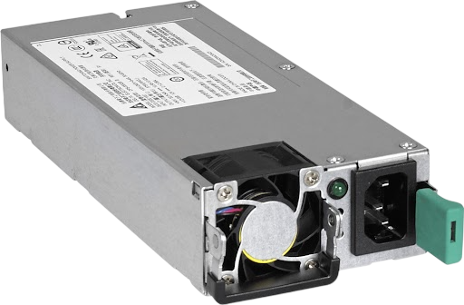
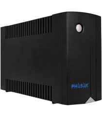
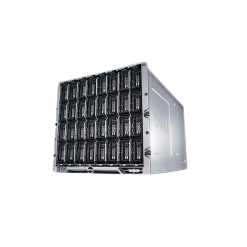

-Photoroom.png)
|  | Son componentes esenciales que proporcionan energía eléctrica |
|  | El sistema de alimentación ininterrumpida (SAI) es un dispositivo de alimentación |
|  | Un chasis de servidor, también conocido como caja o gabinete de servidor, |